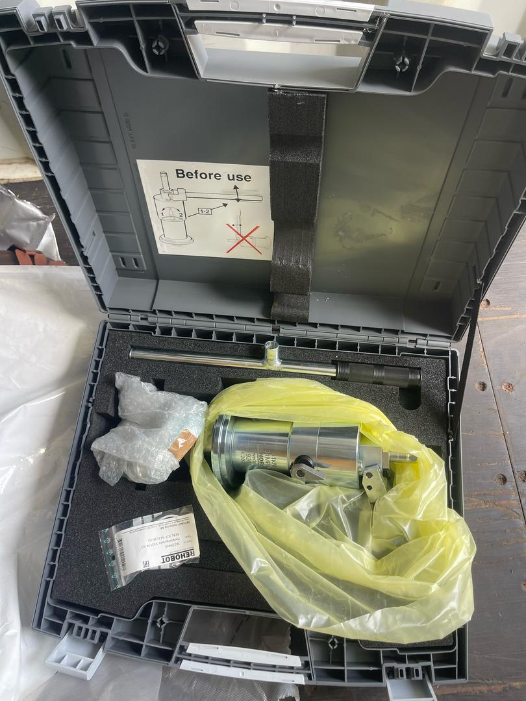

<!-- Blog/Insights Section -->
<section id="insights" class="blog-section" style="padding: 5rem 0; background-color: #f8f9fa;">
    <div class="blog-wrapper" style="max-width: 1200px; margin: 0 auto; padding: 0 20px;">
        <div class="blog-intro" style="text-align: center; margin-bottom: 3rem;">
            <h2>Industry Insights</h2>
            <p style="max-width: 800px; margin: 0 auto; color: #7f8c8d; line-height: 1.6;">Stay informed with the latest news, trends, and expert advice on global shipping and logistics.</p>
        </div>
        
        <!-- Blog Cards Grid -->
        <div class="blog-grid" style="display: grid; grid-template-columns: repeat(auto-fill, minmax(350px, 1fr)); gap: 2.5rem; margin-bottom: 4rem;">
            <!-- Blog Card 1 -->
            <div class="blog-card" style="background: white; border-radius: 10px; overflow: hidden; box-shadow: 0 4px 20px rgba(0, 0, 0, 0.08); transition: all 0.3s ease;">
                <div class="blog-img" style="height: 220px; overflow: hidden;">
                    
                </div>
                <div class="blog-content" style="padding: 1.8rem;">
                    <span style="color: #7f8c8d; font-size: 0.9rem; margin-bottom: 0.8rem; display: block;">June 5, 2024</span>
                    <span style="display: inline-block; padding: 4px 12px; background-color: rgba(52, 152, 219, 0.1); color: #3498db; border-radius: 20px; font-size: 0.8rem; margin-bottom: 1rem;">Industry News</span>
                    <h3 style="font-size: 1.5rem; margin-bottom: 1rem; color: #2c3e50; line-height: 1.4;">E-Commerce Boom: How Retailers are Adapting Their Shipping Strategies</h3>
                    <p style="color: #7f8c8d; margin-bottom: 1.5rem;">Learn how the explosive growth of online shopping has forced retailers to rethink their logistics operations and delivery expectations.</p>
                    <a href="#" style="color: #3498db; text-decoration: none; font-weight: 600; display: inline-flex; align-items: center;">Read More <i class="fas fa-arrow-right" style="margin-left: 5px;"></i></a>
                </div>
            </div>
            
            <!-- Blog Card 2 -->
            <div class="blog-card" style="background: white; border-radius: 10px; overflow: hidden; box-shadow: 0 4px 20px rgba(0, 0, 0, 0.08); transition: all 0.3s ease;">
                <div class="blog-img" style="height: 220px; overflow: hidden;">
                    
                </div>
                <div class="blog-content" style="padding: 1.8rem;">
                    <span style="color: #7f8c8d; font-size: 0.9rem; margin-bottom: 0.8rem; display: block;">May 28, 2024</span>
                    <span style="display: inline-block; padding: 4px 12px; background-color: rgba(52, 152, 219, 0.1); color: #3498db; border-radius: 20px; font-size: 0.8rem; margin-bottom: 1rem;">Technology</span>
                    <h3 style="font-size: 1.5rem; margin-bottom: 1rem; color: #2c3e50; line-height: 1.4;">AI and Machine Learning: Revolutionizing Supply Chain Management</h3>
                    <p style="color: #7f8c8d; margin-bottom: 1.5rem;">Explore how artificial intelligence and machine learning algorithms are enhancing predictive capabilities and operational efficiency in modern logistics.</p>
                    <a href="#" style="color: #3498db; text-decoration: none; font-weight: 600; display: inline-flex; align-items: center;">Read More <i class="fas fa-arrow-right" style="margin-left: 5px;"></i></a>
                </div>
            </div>
            
            <!-- Blog Card 3 -->
            <div class="blog-card" style="background: white; border-radius: 10px; overflow: hidden; box-shadow: 0 4px 20px rgba(0, 0, 0, 0.08); transition: all 0.3s ease;">
                <div class="blog-img" style="height: 220px; overflow: hidden;">
                    
                </div>
                <div class="blog-content" style="padding: 1.8rem;">
                    <span style="color: #7f8c8d; font-size: 0.9rem; margin-bottom: 0.8rem; display: block;">May 10, 2024</span>
                    <span style="display: inline-block; padding: 4px 12px; background-color: rgba(52, 152, 219, 0.1); color: #3498db; border-radius: 20px; font-size: 0.8rem; margin-bottom: 1rem;">Industry News</span>
                    <h3 style="font-size: 1.5rem; margin-bottom: 1rem; color: #2c3e50; line-height: 1.4;">2024 Shipping Regulations Update: What You Need to Know</h3>
                    <p style="color: #7f8c8d; margin-bottom: 1.5rem;">Stay informed about the latest regulatory changes in international shipping and their potential impact on your logistics operations.</p>
                    <a href="#" style="color: #3498db; text-decoration: none; font-weight: 600; display: inline-flex; align-items: center;">Read More <i class="fas fa-arrow-right" style="margin-left: 5px;"></i></a>
                </div>
            </div>
        </div>
        
        <!-- Featured Post -->
        <div class="featured-post" style="display: grid; grid-template-columns: 1fr 1fr; gap: 3rem; margin-bottom: 5rem; background: white; border-radius: 15px; overflow: hidden; box-shadow: 0 4px 20px rgba(0, 0, 0, 0.08);">
            <div class="featured-img" style="height: 100%; min-height: 400px;">
                
            </div>
            <div class="featured-content" style="padding: 3rem; display: flex; flex-direction: column; justify-content: center;">
                <span style="display: inline-block; padding: 6px 15px; background-color: #3498db; color: #fff; border-radius: 20px; font-size: 0.9rem; margin-bottom: 1rem;">Featured</span>
                <h3 style="font-size: 2rem; margin-bottom: 1.2rem; color: #2c3e50;">The Future of Shipping: Trends and Innovations Transforming the Industry</h3>
                <p style="color: #7f8c8d; margin-bottom: 1.5rem; line-height: 1.6;">Explore how emerging technologies, shifting consumer demands, and growing sustainability concerns are reshaping the global shipping landscape and creating new opportunities for businesses worldwide.</p>
                <span style="color: #7f8c8d; font-size: 0.9rem; margin-bottom: 1rem; display: block;">June 15, 2024</span>
                <a href="#" style="color: #3498db; text-decoration: none; font-weight: 600; display: inline-flex; align-items: center;">Read Full Article <i class="fas fa-arrow-right" style="margin-left: 5px;"></i></a>
            </div>
        </div>
    </div>
</section>
